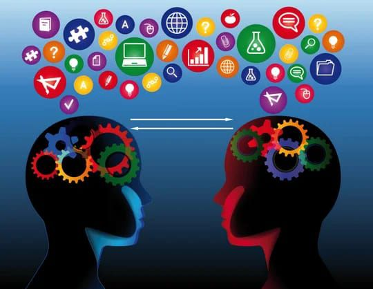

Instituto Hondureño de Educación por Radio
Instituto Hondureño de Educación por Radio IHER
Carreras Profecionales Que Ofrece El IHER
Carrera Bachillerato en Ciencias y Humanidades
Perfil del Egresado (a) del Bachillerato :
Perfil del Egresado (a) del Bachillerato :
El diseño curricular del Bachillerato en Ciencias y Humanidades, está constituido por un
conjunto de componentes (descriptivos) que se derivan de su perfil general de egreso en el que
se cosigna un conjunto de competencias generales que corresponden en gran medida a rerrequisitos
academicos de la Educación Superior, básicamente estas son:

Definición Profecional:
- Apto/a, Comprometido/a, con el conocimiento y resulución de la problemática de su contexto, la práctica de la prevención integral y promoción y defensa de la salud fisica, psicologica, y social del pueblo Hondureño.
- Acepta retos, toma deciciones, actua con autonomia en forma responsable, para conectar y converger con las demas personas, a fin de lograr el bien comun.
- De pensamiento critico, decodificador/a y la evaluador/a de mensajes culturales que le permitan generar nuevos conocimientos.
- Demuestra autoestima positiva y respetuoso/a, tolerante, optimista abierto/a la consideración de las ideas ajenas, al debate y acciones constructivas.
- Demuestra actitudes, valores y normas que le permiten ser un/a ciudadano/a critico y fexible, cooperativo/a, cuidadoso/a de la naturaleza; que valora las repercusiones sociales de los avances de la ciencia como tarea colectiva.
- Consiente de las nesecidades del aprovechamiento racional y sostenible de los recursos naturales del pais, de la protección del medio ambiente y de la prevención integral ante los peligros de los fenomenos naturales, economicos y socioculturales
- Capaz de comunicarse funcionalmente atravez de una lengua extranjera.
Campo de Aplicación:
Área de Matematicas:
- Objeto del área. Trata de la formulación y operación de modelos cuantiativos obtenidos de hechos naturales y sociales que en la actualidad afectan al mundo y a las personas que lo habitan, proporcionando los valores y los procesos que incluyen la distinción y clasificación de datos, declaración de las variables que los expresan, estableciendo de las relaciones, obtención de resultados y comprobación de su validez, con el propócito de confrontarlo ante nuevas situaciones.
- Objeto del área. Trata de aspectos de la realidad social con una vision de totalidad que permita el análisis, la comprención e interpretación de los fenomenos, procesos, estructuras y sistemas sociales asi como las posibilidades de su transformación. Dentro de este bachillerato, se enfatizará en el conocimiento de lo económico, antropológico e historico contemporáneo y en la adquisición de habilidades técnicas, valores y actitudes propias de la investigación de la realidad social.
- Objeto del área. Procura el desarrollo de las capacidades de comprención y expreción de todos los mensajes que hacen posible en nuestra sociedad el intercambio comunicativo entre las personas. En otras palabras, se compromete a posibilitar la adquisición de las competencias comunicativas de los educandos, de su capacidad para conocer y producir enunciados adecuados para intenciones diversas de comunicación, en los diferentes contexto comunicativos que su entorno sociocultural y cientifico ofre en su lengua materna. Además, se inserta en la nesecidad que los educandos tienen de apropiar los conocimientos básicos de una lengua extranjera; por lo que pretende facilitar el acercamiento pertinente que les procure los conocimientos, habilidades y destrezas para comunicarse, mediante, en una lengua extranjeras.
- Objeto del Área: Trata de la formación de una concepción cientifica del universo revelando la existencia objetiva de la materia, su comprención y movimiento, la bellesa y la coherencia de los fenómenos naturales y de las leyes que los rigen, la diversidad de formas de vida, las funciones, los procesos de interrelación. Prepara para el análisis criticos de los avanses cientificos y tecnológicos, su aplicación en la solución con el desarrollo en la materia de salud, seguridad alimentaria, reprodución de las especies y de manera especial y consecuencias del uso irracional de los recursos naturales, como lo es el cambio climatico y su impacto negativo en la bio diversidad.
- Objeto del área: Busca lograr una formación básica en la utilización de medios mas eficientes en el logro de la adquisición del conocimiento cientifico y social en el proceso del desarrollo humano, utilizando para ellos los logros adquiridos por todas la ciencias .
- Objeto del área: Se trata de poner en conocimiento a los educandos de las exigencias académicas de los distintos campos cientificos y ocupacionales que existen en Honduras a fin que ellos puedan seleccionar el su interés para la continuación de estudios en el nivel de la educación superior. Métodos y procedimientos, se utilizará la investigación de campo y bibliografia asi como tambien la entrevista y la visita para lograr un aprendizaje efectivo, que sera sistematizado en el aula para selecionar las ofertas academicas, como becas, cursos y requisitos de ingreso, que ofrece la sociedad en los centros a nivel superior en general.
Habilidades:- Desarrollar capacidad de acceder al conocimiento aplicando los procedimientos de las ciencias. Utilizar en forma sistemática las tecnologias de información y comunicación para la consolidación de su aprendizaje.
Actitudes:- Valorar los aportes de los diferentes campos cientificos y tecnológicos en el desarrollo de la sociedad Hondureña, demostrar la apropiación de los valores fundamentales relacionados con el trabajo productivo, ciudadania y democracia, y la identidad nacional
evidenciar sensibilidad frente a los problemas nacionales y compromiso con sus soluciones.
Comportamientos:- Demostrar el dominio de fundamento de las ciencias naturales, exactas y sociales que lo habilitan para continuar estudios a nivel superior. Manejar en forma aceptable los avanses cientificos tecnologicos que afectan en forma masiva a la sociedad.
FORMACIÓN DE FUNDAMENTO (DÉCIMO GRADO)
| Estas son las clases del primer semestre | ||
| Matematicas I | Español I | Fisica I |
| Quimica I | Biologia I | Ingles I |
| Sociologia | Filosofia | Infomatíca |
| Psicologia |
| Matematicas II | Español II | Fisica II |
| Quimica II | Biologia II | Ingles II |
| Historia de Honduras | Orientación Vocacional | Lenguaje Artistico |
| Educación Fisica |
FORMACIÓN ORIENTADA Y ESPESIFICA (UNDÉCIMO GRADO)
| Lengua y literatura | Matematicas III | Fisica III |
| Quimica III | Introducción a la Economia | Fundamentos de Investigación Social |
| Ingles III | Educación Fisica | Lógica Simbolica |
| Orientación a la Educación Superior | Apreciación Artística | Tecnologia de Información y Comunicación |
| Lenguaje y Pensamiento Critico | Matematicas IV | Fisica IV |
| Educación Ambiental | Biológia Humana | Historia Contemporanea |
| Antropologia | Diseños de Prollectos Cientificos | Ingles IV |
| Dibujo Técnico | Fundamento de Ética Profecional | Introducción a la Programación |